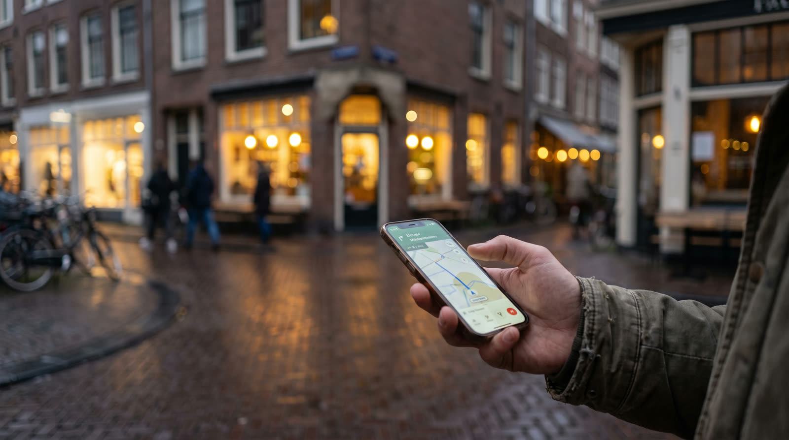

Home · SEO · Google review link maken
Plak de Place ID van je bedrijf en je krijgt meteen een directe link waarmee klanten een review schrijven, plus een QR-code voor op je balie, factuur of visitekaartje. Alles gebeurt in je eigen browser, zonder account.
Kort antwoord
Beheer je zelf het Google Bedrijfsprofiel, dan haal je de link daar: open je profiel op een computer, kies Reviews lezen en dan Meer reviews krijgen, en kopieer de link of sla de QR-code op. Heb je geen toegang tot het profiel, of wil je de QR-code in een groter formaat? Zoek dan de Place ID van het bedrijf op met de gratis Place ID Finder van Google en plak hem hieronder.
Gratis tool
Je Place ID wordt nergens naartoe gestuurd: de link en de QR-code worden op je eigen apparaat gemaakt.
Stap voor stap
Een Place ID is volgens Google de code waarmee een plek uniek wordt aangeduid in de Places-database en op Google Maps.
Ga naar de Place ID-pagina van Google. Op die pagina staat de Place ID Finder: een kaart waarop je een plek zoekt.
Typ de naam van je bedrijf en kies het juiste resultaat met het goede adres. De finder zoekt één plek per keer.
De finder toont de Place ID bij het bedrijf dat je kiest. Kopieer alleen die code, zonder spaties.
Je krijgt een link in de vorm search.google.com/local/writereview?placeid=… en een QR-code. Test de link en deel hem met je klanten.
Gebruik
Op het moment dat een klant afrekent of zijn opdracht afsluit. Google raadt zelf aan klanten naar je Google-link te sturen of een QR-code te laten scannen.
Vraag het iedere klant, niet alleen de blije: Google verbiedt selectief vragen en een beloning in ruil voor een review. Hoe je het netjes vraagt, lees je in hoe je Google reviews krijgt.
Hoe wij het aanpakken
Een reviewlink is een klein onderdeel van lokaal gevonden worden. Bij CarsLease hebben we de website opgebouwd met reviews en directe contactopties, zodat een bezoeker vertrouwen krijgt voordat hij contact opneemt. Met ons SEO-abonnement Radar (€79 per maand) werken we elke maand aan je vindbaarheid; meer daarover op SEO in Den Bosch. Reviews kopen of laten schrijven doen we niet: ze moeten van echte klanten komen.
Veelgestelde vragen
Als beheerder van het Google Bedrijfsprofiel open je je profiel op een computer, kies je Reviews lezen en daarna Meer reviews krijgen. Daar kopieer je de link of sla je de QR-code op. Zonder toegang tot het profiel maak je de link met de Place ID van het bedrijf in de tool op deze pagina.
Volgens Google maak je de QR-code in het Bedrijfsprofiel op dit moment alleen in een browser op een computer, niet op een mobiel apparaat. Deze tool werkt ook op je telefoon.
Een Place ID is de code waarmee Google een plek uniek aanduidt in de Places-database en op Google Maps. Je vindt hem gratis met de Place ID Finder op de website van Google.
Nee. De tool is gratis, je hebt geen account nodig en je Place ID wordt niet naar ons gestuurd: de link en de QR-code worden in je eigen browser gemaakt.
Ja, voor een Google review moet een klant ingelogd zijn op een Google-account. Dat hoeft geen Gmail-adres te zijn.
Nee. Google verbiedt gratis producten, diensten of kortingen in ruil voor een review. Je mag wel iedere klant eerlijk vragen om een review.
Lees verder: hoe Google reviews krijgen · tips voor lokale SEO · SEO bureau Den Bosch · website & SEO
Bronnen: Google Bedrijfsprofiel Help: een link of QR-code maken om reviews aan te vragen · Google Bedrijfsprofiel Help: reviews van klanten beheren · Google Maps Platform: Place IDs · Search Engine Roundtable: directe link naar een Google review
Vraag een gratis testwebsite aan: je ziet eerst het resultaat, dan beslis je.